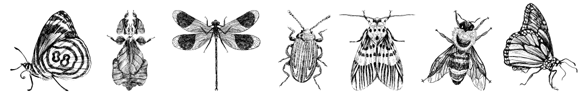

Research and Publications
My research interests focus on how to use multiple, large-scale datasets to make sense of biodiversity in a rapidly changing world. To do this, I pull from a toolkit spanning statistics, machine-learning, and biodiversity informatics. You can access more about my creative work here.
You can use the search function below to look for publications authored by me. Publications are ordered by most recent first (including those in press, in review, and in revision).
+ indicates mentee. | * indicates equal contribution.
-
T. Rippel*, C.M. Davis*, V. Shirey, and G. Wimp. 2022. "The grass is always greener: using remote sensing and machine learning to track changes in a foundation marsh plant species." In Review.
Tags: habitat loss, machine learning, marsh, remote sensing -
F.X. Pallacio, C. Callaghan, P. Cardoso, E.J. Hudgins, M. Jarzyna, G. Ottaviani, F. Riva, G. Roza, V. Shirey, and S. Mammola. 2022. "A protocol for reproducible functional diversity analyses." In revision.
Tags: functional ecology, methodology, statistics, traits -
M. Belitz, E. Larsen, V. Shirey, D. Li, and R. Guralnick. 2022. "Phenological research based on natural history collections: practical guidelines and a Lepidopteran case study." In revision.
Tags: lepidoptera, methodology, modeling, phenology, statistics -
V. Shirey, E. Larsen, A. Doherty, C. Kim+, F. Al-Sulaiman+, J. Hinolan, M. Naive, M. Itliong, M. Ku, M. Belitz, G. Jeschke, V. Barve, A.Y. Kawahara, R. Guralnick, N. Pierce, D. Lohman, and L. Ries. 2022. "LepTraits 1.0: A globally comprehensive dataset of butterfly traits." In press.
Tags: butterflies, data, lepidoptera, phenology, traits -
V. Shirey, R. Khelifa, L. M'Gonigle, and L.M. Guzman. 2022. "Occupancy-detection models with museum specimen data: promise and pitfalls." Methods in Ecology and Evolution. In press. doi.org/10.1111/2041-210X.13896
Tags: methodology, modeling, occupancy, odonata, simulation, statistics -
S.C. Mason, V. Shirey, L. Ponisio, and J.K. Gelhaus. 2021. "Responses from bees, butterflies, and ground beetles to different fire characteristics: A global meta-analysis." Biological Conservation 261. 10.1016/j.biocon.2021.109265
Tags: apidae, bees, butterflies, carabidae, fire, lepidoptera, meta-analysis -
V. Shirey, A.P.S. Carvalho, and A.Y. Kawahara. 2021. "Early evidence for sexually dimorphic, ultraviolet eyespots in Parnassius smintheus, Doubleday, [1847]." The Journal of the Lepidopterists' Society 75 (3): 215-216.
Tags: butterflies, color, lepidoptera, morphology, parnassius -
E. Larsen and V. Shirey. 2021. "Method matters: pitfalls in analysing phenology from occurrence records." Ecology Letters (24 (6): 1287-1289.
Tags: butterflies, lepidoptera, methodology, modeling, phenology, statistics -
V. Shirey, M. Belitz, V. Barve, and R. Guralnick. 2021. "A complete inventory of North American butterfly occurrence data: narrowing data gaps but increasing bias." Ecography 44 (4): 537-547.
Tags: bias, butterflies, data, lepidoptera -
V. Shirey, S. Seppälä, V.V. Branco, and P. Cardoso. 2019. "Current GBIF occurrence data demonstrates both promise and limitations for potential red listing of spiders." Biodiversity Data Journal 7.
Tags: arachnida, bias, conservation, red list, spiders -
P. Cardoso, V. Shirey, S. Seppälä, S. Henriques, M.L. Draney, S. Foord, A.T. Gibbons, L.A. Gomez, S. Kariko, J. Malumbres-Olarte, M. Milne, and C.J. Vink. 2019. "Globally distributed occurrences utilized in 200 spider species conservation profiles (Arachnida: Araneae)." Biodiversity Data Journal 7.
Tags: arachnida, bias, conservation, red list, spiders -
V. Shirey. 2018. "Visualizing natural history collection data provides insights into collection development and bias." Biodiversity Data Journal 6.
Tags: bias, data, natural history, visualization -
K. Seltmann, S. Lafia, D.L. Paul, S.A. James, D. Bloom, N. Rios, S. Ellis, U. Farrell, J. Utrup, M. Yost, E. Davis, R. Emery, G. Motz, J. Kimmig, V. Shirey, E. Sandall, D. Park, C. Tyrrell, S. Thackurdeen, M. Collins, V. O’Leary, H. Prestridge, C. Evelyn, B. Nyberg. 2018. "Georeferencing for Research Use (GRU): an integrated geospatial training paradigm for biodiversity researchers and data providers." Research Ideas and Outcomes 4.
Tags: data, georeferencing, methodology, natural history